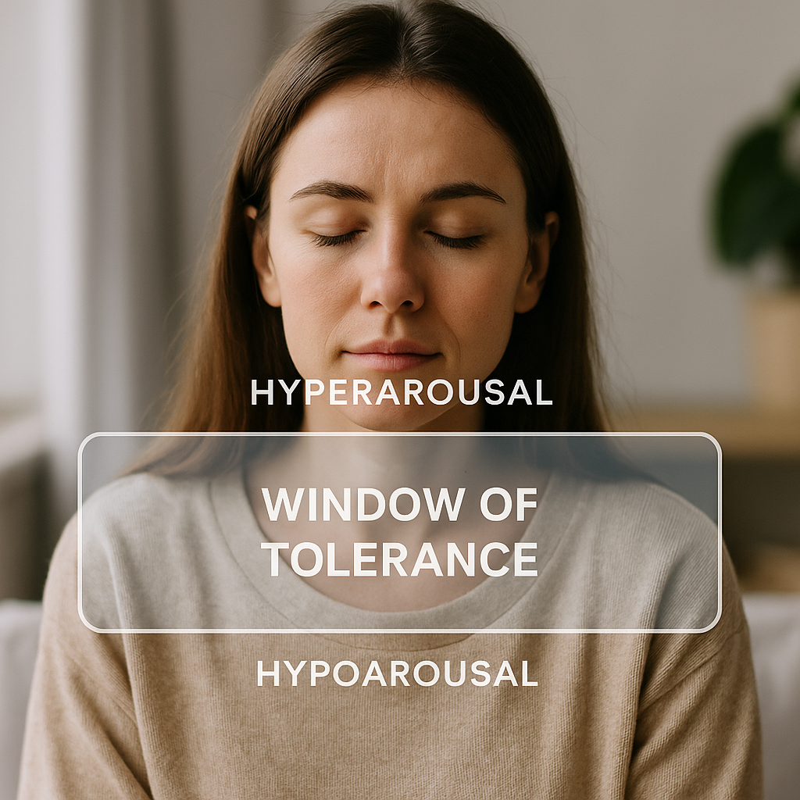

Practical, evidence-informed tools you can use at home — simple steps, steady progress.
Therapies & Tools
This page is a self-help workbook. Each section explains a tool (what, why, how), then gives you a quick
one-minute practice you can try right now. Printables are optional — the steps here already work.
1) CBT (Cognitive Behavioural Therapy)
Thoughts, feelings, and actions form loops. Spot the loop; test a new action.
What it is
CBT helps you notice patterns like: “I made a mistake → I’m useless → I avoid → I feel worse.”
By testing kinder, more accurate thoughts and small actions, the loop eases over time.
Why it helps
Thoughts aren’t facts. When you change behaviour (e.g., try again, ask for help) you gather evidence
that weakens the harsh story.
Step-by-step (1 small loop)
Situation: What happened? (e.g., “Forgot to reply.”)
Thought: What ran through your mind? (“I’m a terrible friend.”)
Feeling: Name 1–2 (sad, guilty; intensity 0–10).
Action: What did you do/avoid?
Alternative thought to test: “I do care — I can send a quick text now.”
New action: Do the tiny step. Re-rate feeling.
Do now (1 minute): Write today’s loop as
Thought → Feeling → Action. Try one kinder thought; take one tiny step.
Brains stay plastic: small safe repetitions + rest + safety cues = new wiring.
What it is
Neuroplasticity: repeated actions strengthen connections; sleep consolidates learning; stress narrows options.
Safety cues (breath, posture, social connection) help the brain open up again.
Why it helps
Short, frequent practice beats long, rare bursts. Pairing a tool with a daily cue makes it stick.
Step-by-step (make a micro-habit)
Pick a tool (e.g., 4–6 breathing, 2 minutes).
Attach it to a daily cue (kettle on → do the breath).
Keep streaks tiny and forgiving. Rest days are part of training.
Do now (1 minute): Choose one tool and one cue. Say it out loud:
“After I ______, I’ll ______ for 2 minutes.”

We cope best inside the “window”. Too high or too low? Use resets to come back in.
What it is
Window: the zone where stress is manageable and thinking is flexible.
Above it: fight/flight (panicky, tense). Below it: freeze/shut-down (numb, foggy).
Why it helps
Naming your state guides the right reset (downshift if high, gently upshift if low).
Step-by-step (check & reset)
Ask: “Too high? Too low? Or in my window?”
If high → long exhale, humming, cool wrists.
If low → sit up, look around, gentle march or stretch, brighter light.
Do now (1 minute): Name your state; pick one matching reset for 60 seconds.
The information on this page is for general understanding and support. It is not a substitute for professional medical, psychological, or legal advice.
If you feel unable to keep yourself safe or someone else is at risk, call 999 (UK) immediately. If you’re outside the UK, contact your local emergency number.
For non-emergency concerns, consider speaking with a qualified health professional or one of the support services listed above.